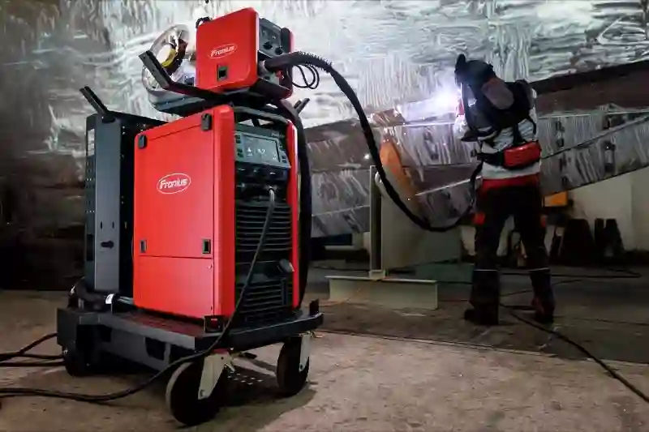
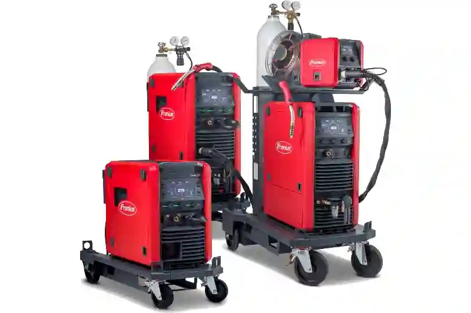

VARIO STAR 304-G MIG MAG Kaynak Makinesi ile Endüstriyel Kaynak Çözümleri
Endüstriyel üretimde kaynak süreçleri, nihai ürünün mekanik dayanımını, ölçüsel stabilitesini ve uzun ömürlü kullanım performansını doğrudan etkileyen kritik operasyonlar arasında yer alır. Aymaksan Makine Parkı bünyesinde konumlandırılan VARIO STAR 304-G MIG MAG Kaynak Makinesi, bu gereksinimleri karşılamak üzere yüksek akım kapasitesi, kararlı ark karakteristiği ve seri üretime uygun kontrol yapısı ile entegre edilmiştir.
Bu makine, özellikle çelik ve alaşımlı malzemelerin gazaltı kaynak uygulamalarında; süreklilik, kaynak dikişi homojenliği ve tekrarlanabilir kalite standartları sunar. Aymaksan’ın CNC talaşlı imalat, fikstürlü montaj ve ölçüsel kontrol altyapısı ile birlikte kullanıldığında, kaynaklı imalat süreçleri yalnızca bir birleştirme işlemi olmaktan çıkarak, yüksek katma değerli bir üretim aşamasına dönüşür.
VARIO STAR 304-G MIG MAG Kaynak Teknolojisinin Üretimdeki Yeri
Modern MIG MAG kaynak sistemleri, manuel kaynak yöntemlerine kıyasla daha yüksek hız, daha düşük hata oranı ve daha kontrollü ısı girdisi avantajı sağlar. VARIO STAR 304-G MIG MAG Kaynak Makinesi, bu teknolojik yaklaşımı endüstriyel ölçekte uygulayabilen yapısıyla özellikle seri üretim odaklı işletmeler için güçlü bir çözüm sunar.
Makinenin sağladığı stabil kaynak arkı, dikiş boyunca eşit nüfuziyet elde edilmesine olanak tanır. Bu durum, kaynak sonrası gerilimlerin minimize edilmesine ve parçanın geometrik bütünlüğünün korunmasına katkı sağlar. Aymaksan üretim yaklaşımında bu özellik, kaynak sonrası taşlama ve düzeltme ihtiyacını azaltarak üretim süresini optimize eder.
Bu teknoloji, seri ve proje bazlı üretimlerde kaynak kalitesini standartlaştırarak üretim verimliliğini artırır. Gazaltı kaynak prensibi sayesinde stabil ark, dengeli ısı dağılımı ve tekrarlanabilir dikiş kalitesi elde edilir. Böylece kaynak sonrası düzeltme ihtiyacı azalır, termin süreleri kısalır. Endüstriyel standartlara uygun, sürdürülebilir ve kontrol edilebilir bir üretim altyapısı oluşturur


MIG MAG Kaynak Sürecinde Gazaltı Teknolojisinin Avantajları
Gazaltı kaynak teknolojisi, eriyik metal banyosunun atmosferik etkilerden korunmasını sağlayarak oksidasyon ve gözenek oluşumu riskini minimize eder. VARIO STAR 304-G MIG MAG Kaynak Makinesi, uygun gaz karışımları ile çalışarak karbon çeliği ve yapısal çelik uygulamalarında yüksek mukavemetli birleşimler oluşturur.
Bu avantaj, özellikle taşıyıcı şaseler, makine gövdeleri ve konstrüksiyon bileşenleri gibi kritik parçalarda kaynak kalitesinin standart hale getirilmesini mümkün kılar. Aymaksan üretim tesisinde bu teknoloji, fikstürlü üretim ile desteklenerek her parçada aynı kalite seviyesinin korunmasını sağlar.
Aymaksan Makine Parkı İçindeki Konumu ve Entegrasyonu
VARIO STAR 304-G MIG MAG Kaynak Makinesi, Aymaksan Makine Parkı içerisinde CNC tornalama, CNC frezeleme ve dik işleme merkezi ve otomatik torna sistemleriyle entegre bir üretim akışının parçasıdır. Bu entegrasyon sayesinde talaşlı imalatı tamamlanan parçalar, ölçü kaybı yaşanmadan doğrudan kaynak operasyonuna alınabilir.
Bu yapı, özellikle çok parçalı montaj gerektiren endüstriyel ürünlerde zaman kaybını önler ve tedarik zinciri karmaşıklığını azaltır. Müşteriler için bu durum, tek merkezden üretim ve daha kısa termin süreleri anlamına gelir.
TIG Kaynak Makinesi PoWerPlus TIG 320 AC/DC Pulse – Teknik Özellikler
VARIO STAR 304-G MIG MAG Kaynak Makinesi, hem seri üretim hem de proje bazlı imalat gereksinimlerine uyum sağlayacak esnekliğe sahiptir. Küçük partilerden orta ölçekli seri üretimlere kadar farklı hacimlerdeki işler, aynı kalite standardı korunarak gerçekleştirilebilir.
Projeni Başlat
VARIO STAR 304-G MIG MAG Kaynak Makinesi ile İşlenebilen Parça Türleri
Endüstriyel üretimde kaynak makinelerinin gerçek değeri, işleyebildiği parça çeşitliliği ve bu parçalar üzerindeki kalite sürekliliği ile ölçülür. VARIO STAR 304-G MIG MAG Kaynak Makinesi, Aymaksan üretim altyapısı içerisinde farklı geometri, et kalınlığı ve kullanım amacına sahip parçaların güvenli şekilde birleştirilmesini mümkün kılar.
Bu makine ile gerçekleştirilen gazaltı kaynak uygulamaları, yalnızca iki metal yüzeyin birleştirilmesi değil; mekanik dayanım, yüzey bütünlüğü ve uzun ömürlü kullanım hedefleri doğrultusunda planlanır. Özellikle CNC tezgâhlarda işlenmiş hassas parçaların kaynaklı montajında, ölçü kaybı yaşanmadan üretim sürecinin devam etmesi kritik bir avantaj sağlar.
Çelik Konstrüksiyon ve Taşıyıcı Parça Kaynakları
Çelik konstrüksiyon bileşenleri, endüstriyel makinelerin ve sistemlerin ana taşıyıcı unsurlarını oluşturur. VARIO STAR 304-G MIG MAG Kaynak Makinesi, bu tür parçaların kaynaklı birleştirilmesinde yüksek nüfuziyet ve dengeli ısı dağılımı sağlayarak yapısal bütünlüğü korur.
Makine şaseleri, taşıyıcı profiller, güçlendirme plakaları ve bağlantı elemanları gibi parçalar, Aymaksan bünyesinde fikstürlü sistemler ile sabitlenerek kaynaklanır. Bu yaklaşım, her üretimde aynı ölçüsel hassasiyetin yakalanmasına katkı sağlar ve seri üretim projelerinde kalite standardının sürdürülebilir olmasını mümkün kılar.
Sac Metal ve Profil Kaynaklı Alt Montajlar
Endüstriyel üretimde sac ve profil parçaların kaynaklı alt montajları, yüksek hacimli üretimlerin temelini oluşturur. VARIO STAR 304-G MIG MAG Kaynak Makinesi, ince ve orta kalınlıktaki sac malzemelerde kontrollü kaynak imkânı sunarak deformasyon riskini minimize eder.
Kabin muhafazaları, makine kapakları, koruyucu şaseler ve destekleyici çerçeveler gibi alt montajlar, MIG MAG kaynak teknolojisi sayesinde hızlı ve tekrarlanabilir şekilde üretilebilir. Bu sayede hem üretim süresi kısalır hem de kaynak sonrası düzeltme işlemleri minimum seviyeye iner.
CNC İşlenmiş Parçaların Kaynaklı Birleştirilmesi
Aymaksan’ın özel talaşlı imalat gücü ile VARIO STAR 304-G MIG MAG Kaynak Makinesi birlikte değerlendirildiğinde, yüksek katma değerli hibrit üretim çözümleri ortaya çıkar. CNC tezgâhlarda hassas toleranslarla işlenen parçalar, kaynak sürecinde ölçü kaybı yaşamadan birleştirilebilir.
Bu yöntem, özellikle çok parçalı endüstriyel sistemlerde montaj doğruluğunu artırır. Delik konumları, yüzey paralellikleri ve merkez kaçıklıkları kontrol altında tutulduğu için nihai ürün montajında ek işçilik ihtiyacı azalır. Bu durum, müşteriler açısından hem maliyet hem de termin avantajı sağlar.
Kalın Etli Parçalar ve Yük Taşıyan Bileşenler
Kalın etli metal parçaların kaynak işlemleri, yüksek akım kapasitesi ve stabil ark kontrolü gerektirir. VARIO STAR 304-G MIG MAG Kaynak Makinesi, bu tür uygulamalarda derin nüfuziyet sağlayarak kaynak dikişinin mukavemetini artırır. Bu özellik, ağır yük taşıyan makine bileşenlerinde güvenli kullanım için kritik bir faktördür.
Endüstriyel Üretimde Sektörel Kullanım Alanları
Gazaltı kaynak sistemlerinin sektörel kullanım alanları, üretim ölçeği ve kalite beklentisine göre farklılık gösterir. VARIO STAR 304-G MIG MAG Kaynak Makinesi, Aymaksan üretim vizyonu doğrultusunda çok sayıda sektöre yönelik esnek çözümler sunar.
Tarım ve İnşaat Makineleri Sektörü
Tarım ve inşaat makineleri, yüksek mekanik dayanım gerektiren ve zorlu çalışma koşullarına maruz kalan ürünlerdir. Bu sektörde kullanılan şase, ataşman ve bağlantı elemanları, kaynak kalitesi açısından yüksek standartlara sahip olmalıdır.
VARIO STAR 304-G MIG MAG Kaynak Makinesi ile gerçekleştirilen kaynaklı imalatlar, bu tür uygulamalarda uzun ömürlü ve güvenli çözümler sunar. Aymaksan’ın proje bazlı üretim yaklaşımı, müşteri taleplerine özel parça ve alt montajların hızlı şekilde hayata geçirilmesini sağlar.
Makine İmalatı ve Endüstriyel Sistemler
Makine imalat sektöründe kaynak, genellikle sistemin iskeletini oluşturan kritik bir üretim adımıdır. Makine gövdeleri, taşıyıcı platformlar ve hareketli sistemlerin bağlantı noktaları, yüksek hassasiyetle kaynaklanmalıdır.
Bu noktada VARIO STAR 304-G MIG MAG Kaynak Makinesi, tekrarlanabilir kaynak kalitesi ile seri üretim yapan firmalar için güvenilir bir çözüm sunar. Aymaksan Makine Parkı içindeki diğer üretim teknolojileriyle entegre çalışan bu sistem, komple makine alt montajlarının tek merkezde üretilmesini mümkün kılar.
Projeni Başlat
VARIO STAR 304-G MIG MAG Kaynak Makinesi Teknik Avantajları
Endüstriyel kaynak süreçlerinde teknik donanım kadar, bu donanımın üretim akışına nasıl entegre edildiği de belirleyici bir faktördür. VARIO STAR 304-G MIG MAG Kaynak Makinesi, yüksek performanslı gazaltı kaynak uygulamaları için geliştirilmiş kontrol yapısı ve kararlı çalışma karakteristiği sayesinde Aymaksan üretim altyapısında güvenilir bir konumda yer alır.
Bu makine, farklı parça geometrileri ve değişken et kalınlıkları için istikrarlı kaynak parametreleri sunarak üretim sürecinde operatör bağımlılığını minimize eder. Böylece her parçada aynı kalite standardının korunması mümkün hale gelir.
Stabil Ark Yapısı ve Kaynak Dikişi Kalitesi
Gazaltı kaynak uygulamalarında kaynak dikişinin homojenliği, parçanın mekanik dayanımını doğrudan etkiler. VARIO STAR 304-G MIG MAG Kaynak Makinesi, stabil ark yapısı sayesinde kaynak banyosunun kontrollü şekilde ilerlemesini sağlar.
Bu özellik, dikiş boyunca eşit nüfuziyet elde edilmesine yardımcı olurken sıçrama oranını da azaltır. Sonuç olarak kaynak sonrası yüzey temizliği ve düzeltme ihtiyacı minimum seviyeye iner. Aymaksan üretim yaklaşımında bu avantaj, zaman ve işçilik maliyetlerini doğrudan düşüren bir faktör olarak değerlendirilir.
Isı Girdisinin Kontrolü ve Parça Geometrisinin Korunması
Kaynak sırasında oluşan ısı, metalin yapısal özelliklerini etkileyebilir. VARIO STAR 304-G MIG MAG Kaynak Makinesi, dengeli ısı dağılımı sağlayarak parça üzerinde oluşabilecek deformasyon riskini minimize eder.
Özellikle CNC tezgâhlarda işlenmiş hassas parçaların kaynaklı montajlarında, ölçüsel doğruluğun korunması büyük önem taşır. Bu makine ile gerçekleştirilen kaynak işlemleri, parça geometrisinin bozulmadan üretim akışına devam edilmesini mümkün kılar.
Fikstürlü Kaynak ve Seri Üretime Uygunluk
Seri üretim projelerinde kalite sürekliliğinin sağlanması, kaynak işlemlerinin fikstürlü sistemlerle desteklenmesini gerektirir. VARIO STAR 304-G MIG MAG Kaynak Makinesi, fikstürlü kaynak uygulamalarında kararlı performans sergileyerek her üretimde aynı kaynak parametrelerinin kullanılmasına olanak tanır.
Bu yapı, özellikle çok parçalı alt montajların üretiminde tekrarlanabilirlik sağlar. Aymaksan Makine Parkı içerisinde bu yaklaşım, seri üretim projelerinde zaman planlamasının daha öngörülebilir hale gelmesine katkı sunar.
Operatör Destekli Kontrol ve Süreç Güvenliği
Makinenin kullanıcı dostu kontrol yapısı, operatörün kaynak parametrelerini üretim ihtiyacına göre hassas şekilde ayarlamasına imkân tanır. Bu durum, kaynak hatalarının erken aşamada önlenmesini ve süreç güvenliğinin artırılmasını sağlar.
Kaynak Kalitesinde Standartlaşma ve Üretim Disiplini
Endüstriyel üretimde sürdürülebilir kalite, belirli standartların sistematik olarak uygulanmasıyla mümkündür. VARIO STAR 304-G MIG MAG Kaynak Makinesi, bu standartlaşma sürecinde teknik altyapı açısından güçlü bir temel oluşturur.
Aymaksan üretim sisteminde kaynak işlemleri; parça ön hazırlığı, fikstürleme, kaynak uygulaması ve kalite kontrol aşamalarından oluşan disiplinli bir süreç içinde gerçekleştirilir. Bu yaklaşım, kaynaklı imalatın yalnızca operatör tecrübesine bağlı kalmadan kontrol altında tutulmasını sağlar.
Kaynak Sonrası Kontrol ve Yüzey İşlemleri
Kaynak işlemi tamamlandıktan sonra yapılan kontroller, nihai ürün kalitesinin doğrulanması açısından önemlidir. Görsel muayene, ölçüsel kontrol ve gerek görüldüğünde mekanik testler ile kaynak dikişinin uygunluğu değerlendirilir.
VARIO STAR 304-G MIG MAG Kaynak Makinesi ile elde edilen düzgün kaynak dikişleri, taşlama ve yüzey düzeltme işlemlerinin daha hızlı ve verimli yapılmasına olanak tanır. Bu da üretim süresinin optimize edilmesine katkı sağlar.
Aymaksan Üretim Standartları ile Uyum
Aymaksan, kaynaklı imalat süreçlerinde kalite ve izlenebilirliği ön planda tutan bir üretim anlayışını benimser. Bu kapsamda VARIO STAR 304-G MIG MAG Kaynak Makinesi, şirketin genel üretim standartlarıyla uyumlu şekilde konumlandırılmıştır.
Makine parkındaki diğer üretim ekipmanlarıyla senkronize çalışan bu sistem, komple alt montaj ve sistem üretimlerinin tek çatı altında gerçekleştirilmesini mümkün kılar.
Projeni Başlat
VARIO STAR 304-G MIG MAG Kaynak Makinesi ile Kârlı Üretim Alanları
Endüstriyel üretimde yatırımın geri dönüşü, kullanılan makinenin teknik kapasitesinden ziyade doğru parça ve doğru sektör seçimiyle doğrudan ilişkilidir. VARIO STAR 304-G MIG MAG Kaynak Makinesi, Aymaksan’ın mevcut üretim altyapısıyla birlikte değerlendirildiğinde, belirli sektör ve parça gruplarında yüksek kârlılık potansiyeli sunar.
Bu potansiyelin etkin şekilde kullanılabilmesi için, kaynaklı imalatın tek başına bir hizmet olarak değil; talaşlı imalat, montaj ve kalite kontrol süreçleriyle entegre bir üretim paketi olarak konumlandırılması gerekir.
Tarım ve İnşaat Makineleri için Kaynaklı Alt Montajlar
Tarım ve inşaat makineleri sektörü, kaynaklı imalat açısından en istikrarlı talep alanlarından biridir. Bu sektörde kullanılan parçalar genellikle kalın etli, yüksek mukavemet gerektiren ve proje bazlı tasarlanan bileşenlerden oluşur. VARIO STAR 304-G MIG MAG Kaynak Makinesi, bu tür uygulamalarda hem dayanım hem de üretim hızı açısından önemli avantaj sağlar.
Ataşman gövdeleri, taşıyıcı şaseler, bağlantı kulakları ve güçlendirme plakaları gibi parçalar; doğru fikstürleme ve kontrollü kaynak parametreleri ile üretildiğinde yüksek birim kârlılık sağlar. Aymaksan için bu sektör, uzun vadeli müşteri ilişkileri ve tekrar eden siparişler açısından stratejik bir konumdadır.
Makine İmalatı ve OEM Alt Yüklenici Üretimleri
Makine imalatçıları ve OEM firmalar, genellikle kaynaklı alt montajları dış kaynak kullanımıyla temin etmeyi tercih eder. Bu noktada VARIO STAR 304-G MIG MAG Kaynak Makinesi, Aymaksan’ın güvenilir bir alt yüklenici olarak konumlanmasına imkân tanır.
Makine gövdeleri, taşıyıcı platformlar ve modüler sistem bileşenleri gibi parçalar; CNC işleme sonrası kaynaklı montaj gerektirdiğinden, tek merkezden üretim sunan firmalar rekabet avantajı elde eder. Bu yaklaşım, yalnızca fiyat rekabetine değil, kalite ve teslimat sürelerine dayalı bir iş modeli oluşturur.
CNC + Kaynak Entegrasyonu ile Katma Değerli Parçalar
En yüksek kârlılık potansiyeli, CNC talaşlı imalat ile kaynaklı imalatın birlikte sunulduğu projelerde ortaya çıkar. VARIO STAR 304-G MIG MAG Kaynak Makinesi, CNC tezgâhlarda işlenmiş hassas parçaların kaynaklı montajında güvenli ve tekrarlanabilir sonuçlar elde edilmesini sağlar.
Bu entegrasyon sayesinde Aymaksan, yalnızca parça üreten bir tedarikçi değil; montajlı alt sistemler sunan çözüm ortağı olarak konumlanabilir. Bu durum, teklif başına düşen toplam ciroyu artırırken müşteri sadakatini de güçlendirir.
Aymaksan İçin Stratejik Üretim ve Satış Yaklaşımı
VARIO STAR 304-G MIG MAG Kaynak Makinesi’nin sunduğu teknik kapasite, doğru stratejiyle birleştirildiğinde sürdürülebilir büyüme sağlar. Aymaksan için önerilen yaklaşım, belirli parça ailelerine odaklanarak üretim süreçlerini standartlaştırmak ve bu standartları pazarlama diline taşımaktır.
Parça Ailesi Bazlı Üretim Modeli
Belirli bir parça ailesine odaklanmak, hem üretim verimliliğini hem de maliyet kontrolünü kolaylaştırır. Örneğin; kaynaklı şase grupları veya bağlantı elemanları gibi tekrar eden ürünler için sabit fikstürler ve standart kaynak parametreleri oluşturulabilir.
Bu model, VARIO STAR 304-G MIG MAG Kaynak Makinesi kullanımında hata oranını düşürürken, teklif ve planlama süreçlerini de hızlandırır.
Fiyatlandırma ve Teklif Stratejisi
Kaynaklı imalat projelerinde fiyatlandırma; malzeme maliyeti, sarf tüketimi, çevrim süresi ve kalite kontrol adımlarının doğru hesaplanmasını gerektirir. Aymaksan’ın bu süreçleri şeffaf şekilde sunması, müşteri güvenini artırır.
Makine parkı gücünün vurgulanması, tekliflerde yalnızca fiyat değil; üretim kabiliyeti ve kalite standartlarının da öne çıkarılmasını sağlar.
Uzun Vadeli Müşteri ve Tekrar Sipariş Avantajı
Kaynaklı alt montaj üretimleri, genellikle uzun vadeli projelere dayanır. Kaliteli ve tutarlı üretim, tekrar sipariş olasılığını artırır ve Aymaksan için sürdürülebilir gelir modeli oluşturur.
Projeni Başlat
VARIO STAR 304-G MIG MAG Kaynak Makinesi ile Aymaksan Üretim Gücünün Özeti
Endüstriyel üretimde kullanılan her makine, yalnızca teknik bir ekipman değil; aynı zamanda firmanın üretim yaklaşımını ve kalite anlayışını temsil eder. VARIO STAR 304-G MIG MAG Kaynak Makinesi, Aymaksan Makine Parkı içerisinde bu yaklaşımın güçlü bir tamamlayıcısı olarak konumlandırılmıştır.
Bu makine ile gerçekleştirilen gazaltı kaynak uygulamaları; CNC talaşlı imalat, fikstürlü montaj ve kalite kontrol süreçleriyle entegre edilerek yüksek katma değerli üretim çözümlerine dönüştürülür. Bu bütüncül yapı, Aymaksan’ın yalnızca parça üreticisi değil, endüstriyel çözüm ortağı kimliğini güçlendirir.
Tek Merkezden Üretim ve Kalite Sürekliliği
VARIO STAR 304-G MIG MAG Kaynak Makinesi sayesinde Aymaksan, farklı üretim disiplinlerini tek merkezde toplayarak müşteri için operasyonel karmaşıklığı azaltır. Talaşlı imalat sonrası kaynaklı montaj, ölçüsel tutarlılık korunarak gerçekleştirilir ve kalite standartları üretimin her aşamasında izlenebilir hale gelir.
Bu yaklaşım, özellikle seri üretim ve proje bazlı işlerde termin sürelerinin kısalmasına ve maliyetlerin kontrol altında tutulmasına olanak tanır.
Uzun Vadeli Projelerde Güvenilir Üretim Altyapısı
Kaynaklı imalat gerektiren endüstriyel projeler, genellikle uzun vadeli iş birliklerine dayanır. VARIO STAR 304-G MIG MAG Kaynak Makinesi, sunduğu stabil performans ile bu tür projelerde güvenilir bir üretim altyapısı oluşturur.
Aymaksan için bu durum, tekrar eden siparişler ve sürdürülebilir müşteri ilişkileri anlamına gelir. Üretim sürekliliği ve kalite istikrarı, firmanın pazardaki konumunu güçlendiren temel unsurlar arasında yer alır.
Sonuç: Aymaksan’da Endüstriyel Kaynağın Stratejik Gücü
VARIO STAR 304-G MIG MAG Kaynak Makinesi, Aymaksan Makine Parkı’nın teknik kapasitesini tamamlayan ve endüstriyel üretimde katma değer yaratan önemli bir üretim unsurudur. CNC işleme, kaynaklı montaj ve kalite kontrol süreçlerinin tek çatı altında sunulması, Aymaksan’ı rekabetçi pazarda güçlü bir konuma taşır.
Aymaksan’ın üretim yaklaşımında endüstriyel kaynak, yalnızca birleştirme işlemi değil, ürün kalitesini belirleyen stratejik bir aşamadır. VARIO STAR 304-G MIG MAG Kaynak Makinesi, talaşlı imalat, fikstürlü montaj ve kalite kontrol süreçleriyle entegre çalışarak yüksek katma değerli çözümler sunar. Bu yapı, ölçüsel tutarlılık, tekrarlanabilir kalite ve termin güvenilirliği sağlar. Aymaksan, kaynaklı alt montajları tek merkezden üreterek müşteriler için tedarik karmaşıklığını azaltır. Böylece uzun vadeli iş birlikleri kurulur, tekrar eden siparişler desteklenir ve rekabetçi pazarlarda sürdürülebilir büyüme elde edilir. Bu strateji, mühendislik odaklı planlama, süreç disiplini, izlenebilir kalite kayıtları ve müşteri beklentilerine uyum sayesinde operasyonel güven yaratır, kurumsal itibarı güçlendirir, pazar konumunu kalıcılaştırır.
Bu sayfa, yalnızca bir makine tanıtımı değil; Aymaksan’ın üretim disiplini, kalite anlayışı ve sektörel çözüm gücünün dijital yansıması olarak tasarlanmıştır.
Projeni Başlat
Şu linklerde yer alan sayfaları ve web sitelerini incelemenizi de tavsiye ederiz.
Dış Kaynaklar
- Fronius Türkiye – Kaynak teknolojileri – MIG ve TIG kaynağı | Dünya çapında MIG/MAG kaynak teknolojisi otoritesi.
- Gedik Holding – Gedik Kaynak – Türkiye’nin En Büyük Kaynak Teknolojileri Kurumu.